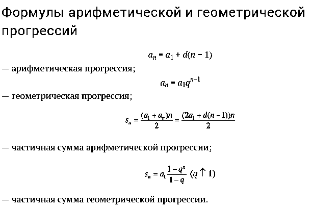
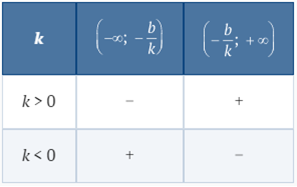
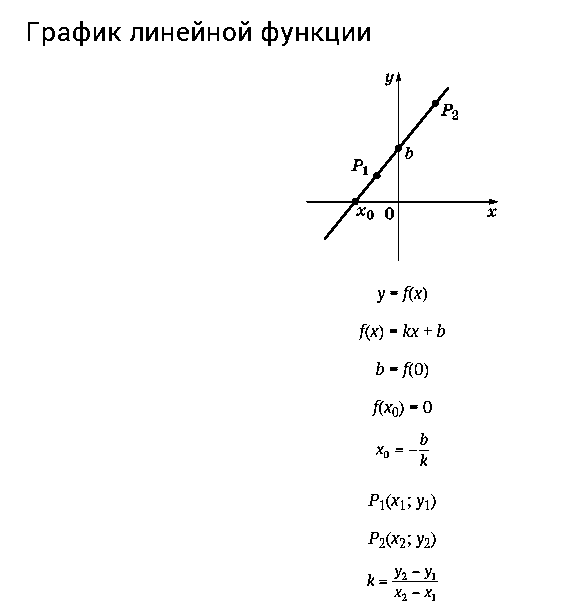
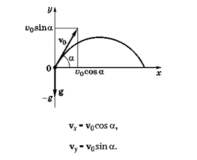
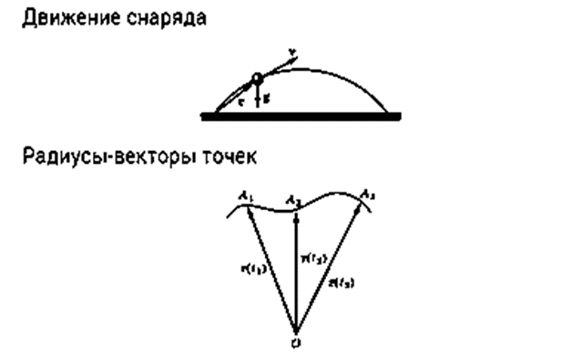
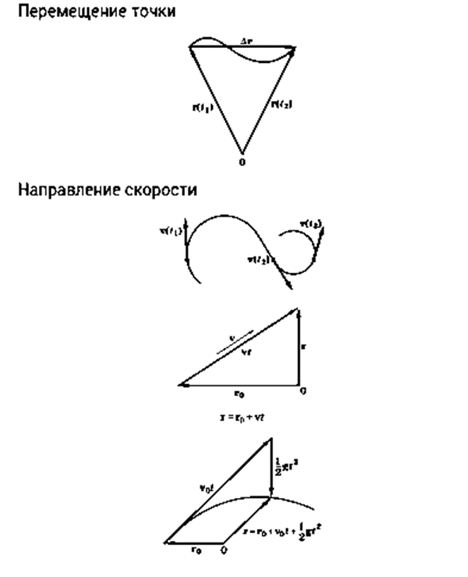
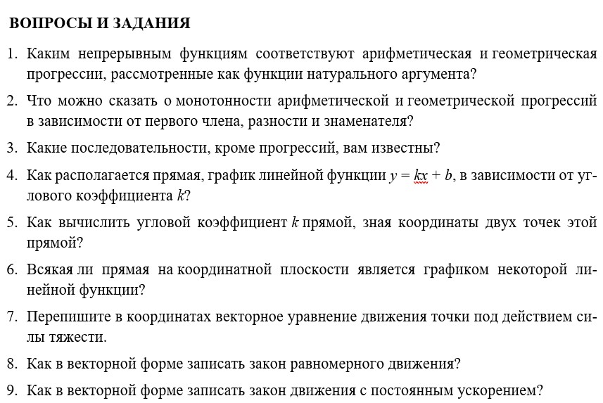

В основе математического анализа лежит идея движения, изменения процесса. Он предлагает набор некоторых стандартных математических моделей, с помощью которых можно описать различные процессы, разнообразные связи между меняющимися величинами, переменными
1. Дискретная модель — последовательность. Стандартный пример — банковский вклад.
При начальном вкладе A0, годовом проценте роста вклада p и при условии капитализации вклада (в конце годового срока накопленный процент добавляется к вкладу и последующее начисление производится с увеличенной суммы) изменения вклада происходят один раз в год. Моделью этого процесса является числовая последовательность A0, A1, A2, …, где An — сумма вклада через n лет (n — натуральное число). Ясно, что так как при переходе от n-го года к (n + 1)-му накопленный за n лет вклад An умножается на число
В этой модели время меняется скачками, т. е. дискретно; нас интересует только число полностью прошедших лет, которое является натуральным числом.
2. Непрерывная модель — функция, заданная формулой. Стандартный пример — закон движения материальной точки под действием силы тяжести. По этому закону положение r точки, движущейся в пространстве под действием силы тяжести в момент времени t, может быть описано формулой
где r0 — вектор начального положения точки (при t = 0); v0 — вектор начальной скорости; g — некоторый постоянный вектор (ускорение свободного падения).
В этой модели время — переменная t — меняется непрерывно в течение некоторого промежутка. Модель позволяет вычислить положение точки в любой момент времени.
3. Модель в форме зависимости — уравнение. Стандартный пример — второй закон Ньютона. Масса тела m, действующая на него сила F и его ускорение a связаны зависимостью F = ma. Если нам явно заданы выражения для определения силы и массы, то нахождение ускорения является задачей решения алгебраического уравнения. Если при тех же данных требуется найти закон движения, необходимо не только определить ускорение, но и знать новый вид связи между положением точки r и ее ускорением a в момент времени t. Моделирование этого вида связи происходит с по- мощью новой, не алгебраической, операции — дифференцирования, — а само уравнение (если понимать его как уравнение для нахождения r) становится дифференциальным уравнением.
4. Интегральная модель — плотность. Стандартный пример — масса тела с переменной плотностью. В простейших случаях масса тела m пропорциональна его объему V: m = ρV, где ρ — некоторое постоянное число (плотность). Так, для ртути ρ = 13600 кг/м3 и банка ртути объемом 1 л = 1 дм3 = 10−3 м 3 имеет массу m = 13,6 кг. Во многих случаях плотность вещества может меняться при переходе от одной точки к другой. Тогда удается записать лишь приближенное равенство m ≈ ρV, которое верно только вблизи рассматриваемой точки и при переходе от одной точки A данного тела к другой коэффициент ρ будет меняться по закону: ρ = ρ(A). Исследование модели такого рода требует еще одной новой операции — интегрирования.
Таким образом, математический анализ создает модели для описания различных процессов, исследование которых требует применения наряду с известными методами и новых операций — дифференцирования и интегрирования.
XVIII в. нередко называют веком научной революции, определившей развитие общества вплоть до наших дней. Наиболее ярко эта революция проявилась в замечательных математических открытиях, совершенных в XVII в. и осознанных в последующее столетие. «Нет ни одного объекта в материальном мире и ни одной мысли в области духа, на которых не отразилось бы влияние научной революции XVIII в. Ни один из элементов современной цивилизации не мог бы существовать без принципов механики, без аналитической геометрии и дифференциального исчисления. Нет ни одной отрасли в деятельности человека, которая не испытала бы на себе сильного влияния гения Галилея, Декарта, Ньютона и Лейбница». Эти слова французского математика Э. Бореля, произнесенные им в 1914 г., остаются справедливыми и в настоящее время. Рядом с названными четырьмя именами можно поставить имена их предшественников, современников и последователей: П. Ферма (1601—1665), Б. Паскаль (1623—1662), И. Кеплер (1571—1630), Х. Гюйгенс (1629—1695), И. Барроу (1630—1677), братья Якоб и Иоганн Бернулли (1654—1705; 1667—1748) и др.
Что же нового внесли эти ученые в понимание и описание окружающего нас мира? Коротко можно было бы ответить так — в это описание вошло движение, изменение, вариативность, т. е. жизнь с ее динамикой и развитием, а не только статические слепки и одномоментные фотографии ее состояний.
C течением времени математические открытия XVII—XVIII вв. выразились в таких понятиях, как переменная, функция, координаты, график, вектор, производная, интеграл, ряд, дифференциальное уравнение. Некоторые понятия в этом списке читателю знакомы, другие предстоит узнать в этой книге.
Еще недавно понятия «дифференциал», «интеграл» казались сложными и недоступными. Однако стоит вспомнить, что Паскаль, Декарт и Лейбниц были не столько математиками, сколько философами. Именно общечеловеческий и философский смысл их математических открытий составляет в настоящее время главную ценность и является необходимым элементом общей культуры.
Математические модели
1. Прогрессии. Арифметические и геометрические прогрессии являются самыми простыми и наиболее часто встречающимися примерами числовых последовательностей.
Арифметическая прогрессия — последовательность, задаваемая рекуррентной формулой an = an−1 + d, d — разность прогрессии.
Геометрическая прогрессия — последовательность, задаваемая рекуррентной формулой an = qan−1, q — знаменатель прогрессии.

2. Линейные функции. Линейной функцией называется функция, значения которой могут быть вычислены по формуле y = kx + b.
Область определения. Линейная функция, заданная формулой y = kx + b, имеет областью определения множество R всех действительных чисел.
Обращение в нуль. Линейная функция при k ≠ 0 имеет единственный нуль:
Промежутки постоянного знака. Линейная функция y = kx + b, k ≠ 0, сохраняет постоянный знак на каждом из промежутков и в зависимости от коэффициента k

Монотонность. Линейная функция y = kx + b возрастает на всей числовой оси, если k > 0, и убывает на всей числовой оси, если k < 0

3. Векторное уравнение движения. С движением точки по некоторой кривой связан ряд векторных величин: r — радиус-вектор; характеризующий положение точки; v — скорость точки; a — ускорение.
Зафиксируем некоторую точку отсчета O и будем положение движущейся точки в момент времени t задавать радиусом-вектором относительно O. Если в моменты времени t1, t2, t3 точка занимает положения A1, A2, A3, то ее радиусы-векторы
Итак, мы получили первую векторную величину, связанную с движением точки, — радиус-вектор r, определяющий ее положение относительно некоторой точки отсчета O.
В простейшей ситуации, когда точка движется по прямой, ее положение определяется одним числом — координатой.
Часто в механике важно знать не положение точки, а ее перемещение за интервал времени [t1, t2]. Перемещение является вектором и изображается направленным отрезком, начало и конец которого совпадают с положениями точки в моменты t1 и t2. Перемещение обозначают ∆r. Вектор ∆r связан с радиусами-векторами, характеризующими положение точки: ∆r = r(t2) − r(t1). Про перемещение можно сказать, что оно является приращением вектора r за отрезок времени [t1, t2].
В простейшем случае, когда точка движется по прямой, скорость направлена по этой же прямой. В общем случае скорость направлена по касательной к траектории движения.
Если равнодействующая F всех сил, действующих на точку, равна нулю, то ускорение a также равно нулю и точка движется с постоянной скоростью v. В этом случае радиус-вектор r точки линейно зависит от времени: r = r0 + vt, где t — время и r0 —начальное положение точки, т. е. r0 = r(0).
Если на точку действует постоянная сила F, то ускорение a постоянно и точка совершает движение по квадратичному закону (*), где v0 — начальная скорость точки. Скорость точки в этом случае меняется линейно: v = v0 + gt.
Рассмотрим, например, движение снаряда, начальная скорость v0 которого была направлена под углом a к горизонту. Выберем в качестве начальной точки O положение снаряда в момент времени t = 0, тогда получаем соотношение (*). (Здесь рассматривается идеальная ситуация, когда сила тяжести, действующая на снаряд, постоянна и действием других сил пренебрегаем.)
При решении задач от векторных уравнений переходят к координатным.

Выберем оси координат так, как показано на рисунке. Векторное равенство (*) запишем в проекциях на оси координат, т. е. в координатном виде. Сначала разложим векторы v0 и g по горизонтальному и вертикальному направлениям. Проекция вектора v0 на ось x равна v0 cos a, на ось y − v0 sin a; проекция ускорения на ось x равна нулю, а на ось y равна −g. Таким образом, rx = tv0 cos a; где rx, ry — координаты вектора r.


